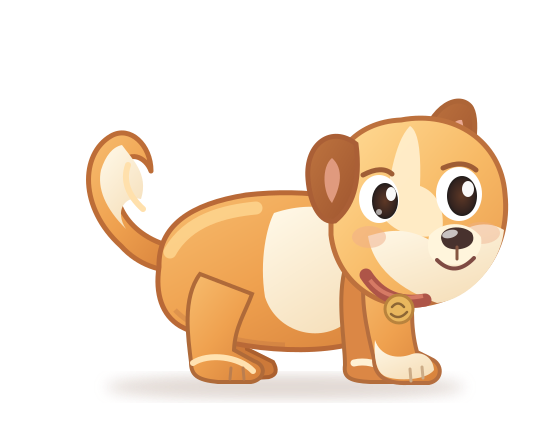

Draft art only. This displays the original editable rig master across sizes and backgrounds. It is not a working Windows overlay, a walk cycle, an approved mascot, or a promise of TTS synchronization.
Small-size inspection
64px
120px
180px
Choreography — required future tests
Peeks from a safe edge; actual feet must land.
Travel and gait share step distance.
Decelerates, plants paws, looks toward user.
Natural cached voice; audio-timed mouth animation.
Persist Done/Snooze, then react with personality.
Authored turn and proper gait, then disappears.
Artwork: puppy-side-rig.svg · Review specifications: CHARACTER_AND_MOTION.md and REMINDER_PERFORMANCE.md · No cloud, fonts, scripts or packages loaded from the network.